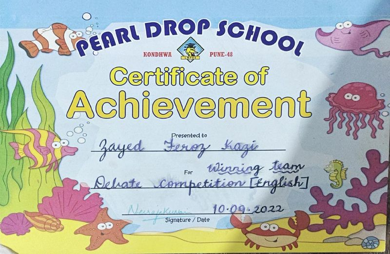
CERT 0101 · ACHIEVEMENT
English Debate Competition
Winning team · English debate
IssuerPearl Drop School
View certificateCertificates & credentials
This archive brings together 17 certificates, awards, and participation records from school, competitions, and community events. I’m focused on cybersecurity; these records show the wider foundations I’ve built along the way.
There are no cybersecurity-specific certifications in this archive yet. Computing, science, and problem-solving records are grouped separately below.
A page for every record
Age bands are approximate; several certificates list only a year or school session.
Showing 17 of 17 records

CERT 01Winning team · English debate
IssuerPearl Drop School
View certificate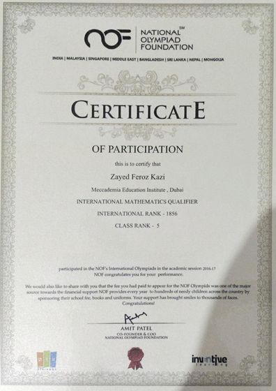
CERT 02International Olympiads · class rank 5
IssuerNational Olympiad Foundation
View certificate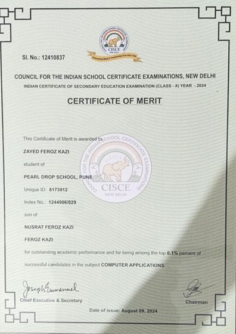
CERT 03Class X examination · academic distinction
IssuerCISCE
View certificate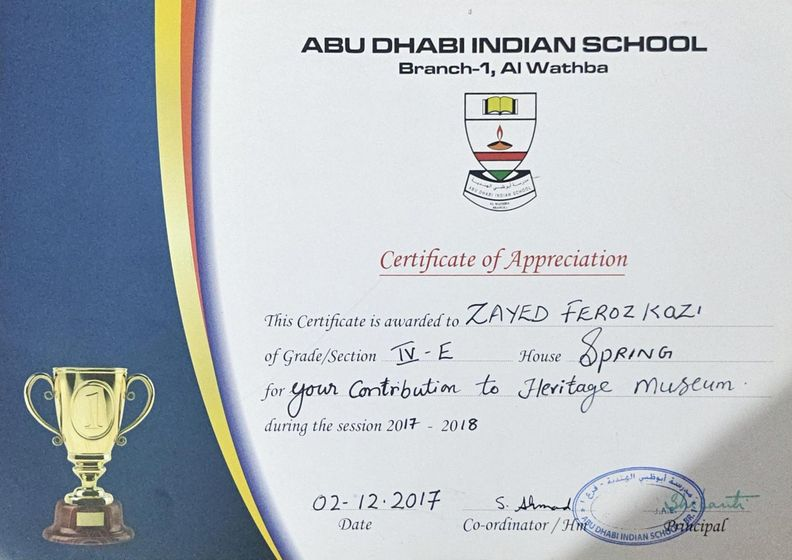
CERT 04School community contribution
IssuerAbu Dhabi Indian School · Al Wathba
View certificate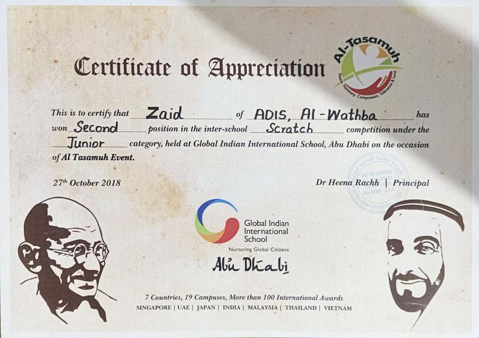
CERT 05Second position · Al Tasamuh event
HostGlobal Indian International School · Abu Dhabi
View certificate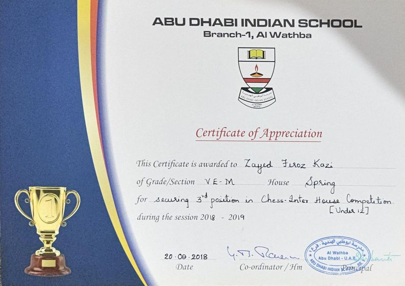
CERT 06Third place · under-12 category
IssuerAbu Dhabi Indian School · Al Wathba
View certificate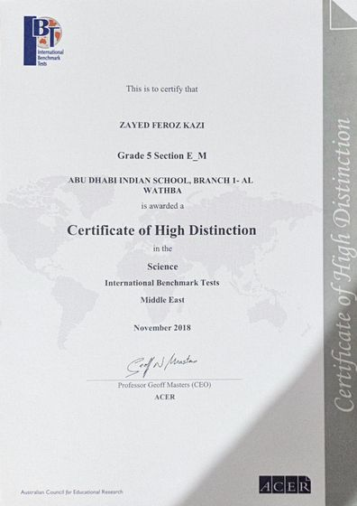
CERT 07High Distinction · Middle East
IssuerAustralian Council for Educational Research
View certificate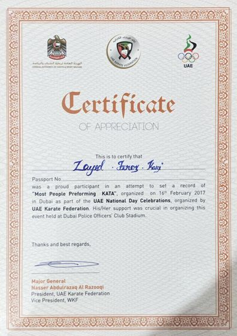
CERT 08UAE National Day record attempt · Dubai
IssuerUAE Karate Federation
View certificate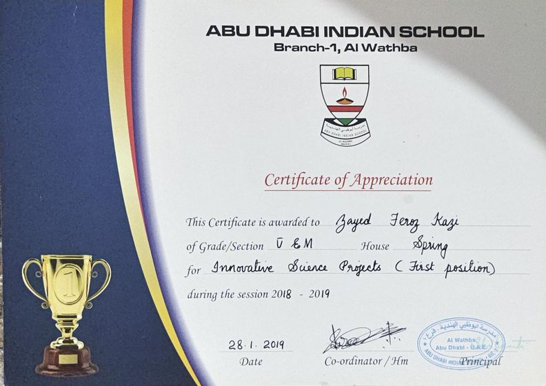
CERT 09First position · school competition
IssuerAbu Dhabi Indian School · Al Wathba
View certificate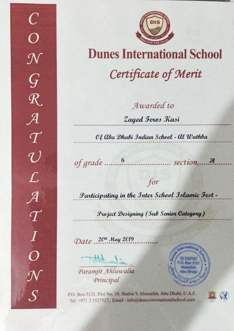
CERT 10Sub-senior category · Inter-school Islamic Fest
IssuerDunes International School
View certificate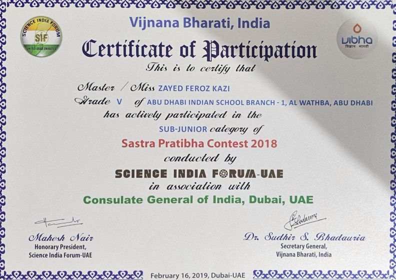
CERT 11Sub-junior category · 2018 contest
IssuerScience India Forum · Vijnana Bharati
View certificate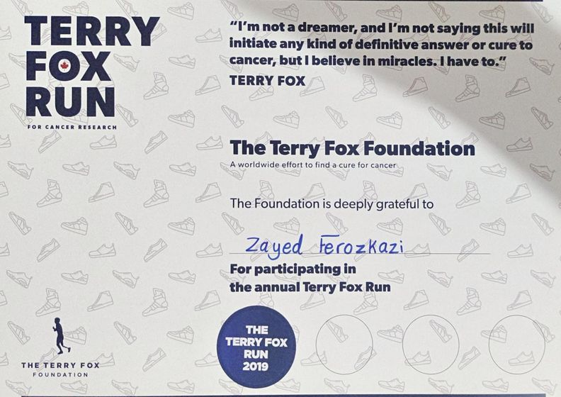
CERT 12Annual run for cancer research
IssuerTerry Fox Foundation
View certificate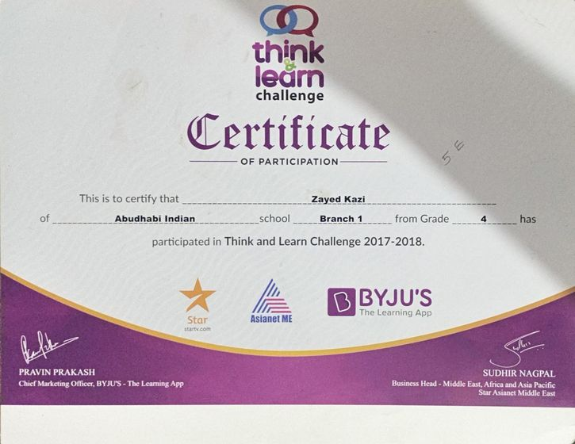
CERT 13Participation · Grade 4
IssuerBYJU'S · Asianet Middle East
View certificate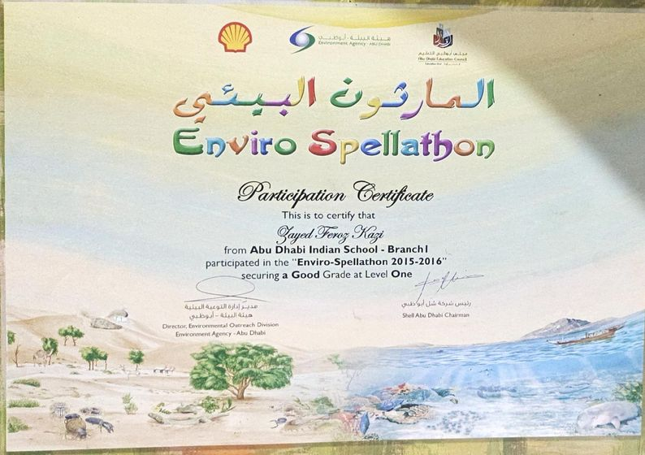
CERT 14Good Grade · Level One
IssuerEnvironment Agency · Abu Dhabi
View certificate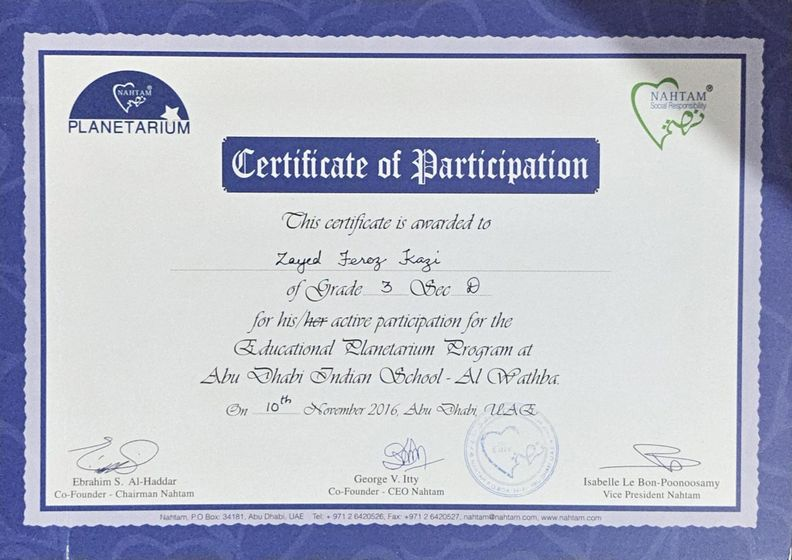
CERT 15School program · Abu Dhabi
IssuerNahtam
View certificate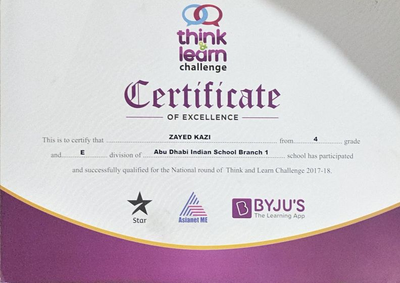
CERT 16Qualified for the national round · Grade 4
IssuerBYJU'S · Asianet Middle East
View certificate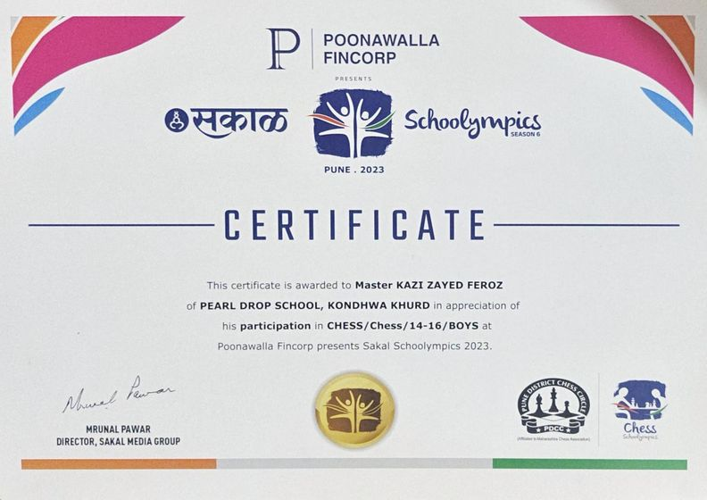
CERT 17Boys 14–16 category · Pune
OrganizerSakal Schoolympics
View certificateTry a different age group, genre, or issuer.